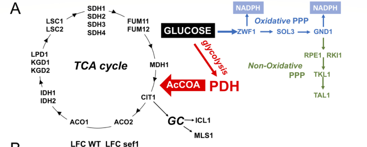

GND1 encodes 6-phosphogluconate dehydrogenase (decarboxylating) (EC 1.1.1.44), the NADP+-dependent enzyme of the oxidative pentose phosphate pathway (oxPPP). It catalyses 6-phospho-D-gluconate + NADP+ -> D-ribulose 5-phosphate + CO2 + NADPH, the second NADPH-generating step of the oxPPP, and feeds ribulose 5-phosphate into the non-oxidative branch for nucleotide and pentose-sugar interconversions. The enzyme is a homodimer of the 6PGDH family whose N-terminal coenzyme-binding domain carries the Gly-X-Ala-X-Met-Gly fingerprint and the Asn-Arg-Thr 2'-phosphate-binding motif that characterise NADP+-specific 6PGDHs, in contrast to the NAD+-preferring bacterial forms. In Candida albicans, Gnd1 is predominantly cytosolic, but a minor peroxisomal pool (about 5% of the protein) is generated by alternative splicing of an intron that encodes an in-frame PTS2; import of this isoform depends on the PTS2 receptor Pex7 and is most evident under peroxisome-inducing conditions such as growth on oleate. Iron limitation up-regulates GND1 together with ZWF1 as part of a metabolic remodelling that increases oxPPP NADPH production for redox defence.
| GO Term | Evidence | Action | Reason |
|---|---|---|---|
|
GO:0004616
phosphogluconate dehydrogenase (decarboxylating) activity
|
IBA
GO_REF:0000033 |
ACCEPT |
Summary: Core molecular function: Gnd1 is the NADP+-dependent 6-phosphogluconate dehydrogenase (EC 1.1.1.44) catalysing 6-phospho-D-gluconate + NADP+ -> D-ribulose 5-phosphate + CO2 + NADPH, the second NADPH-generating step of the oxidative PPP. The term is defined with NADP+ as the acceptor; this cofactor specificity is the correct one for the C. albicans enzyme: the coenzyme-binding domain carries the Gly-X-Ala-X-Met-Gly fingerprint and the Asn-Arg-Thr 2'-phosphate motif that define NADP+ specificity in 6PGDHs, and lacks the Asp-Arg-Asp motif of NAD+-preferring bacterial enzymes. Oxidative-PPP NADPH production attributable to Zwf1 plus Gnd1 has been measured in C. albicans lysates with NADP+ as the acceptor.
Reason: Well-supported core catalytic function at the right level of cofactor specificity. The phylogenetic inference is consistent with the UniProt family/EC assignment, with the conserved NADP+-specificity determinants in the sequence, and with the NADP+-dependent oxidative-PPP activity attributable to Zwf1 plus Gnd1 measured in C. albicans extracts.
Supporting Evidence:
PMID:35234135
6-Phosphogluconate dehydrogenase (6PGDH; EC 1.1.1.44) catalyses the oxidative decarboxylation of 6-phosphogluconate to ribulose 5-phosphate in the context of the oxidative part of the pentose phosphate pathway.
PMID:35234135
highlighted the role of Asn32, Arg33 and Thr34 in the turn between βb and αb in interacting with the 2′-phosphate mainly by hydrogen bonds and defining NADP+ specificity
file:CANAL/GND1/GND1-bioinformatics/RESULTS.md
Verdict (from `results.json`): NADP+-specific determinants present (Asn-Arg-Thr); NAD+-type Asp-Arg-Asp absent.
PMID:40183578
Since ZWF1 catalysis provides the 6-phosphogluconate substrate for GND1 (see Fig. 6A), the NADPH formed reflects activity from both enzymes
|
|
GO:0009051
pentose-phosphate shunt, oxidative branch
|
IBA
GO_REF:0000033 |
ACCEPT |
Summary: Gnd1 is one of the two NADPH-producing dehydrogenases of the oxidative branch of the PPP in C. albicans, acting downstream of Zwf1; the genes for both are induced together under iron starvation with a matching increase in oxidative-PPP NADPH production.
Reason: Direct pathway placement in C. albicans supports the oxidative-branch term as the core process.
Supporting Evidence:
PMID:22094058
NADPH is produced by the two dehydrogenases in the oxidative branch of the PPP: glucose-6-phosphate dehydrogenase (Zwf1) and 6-phosphogluconate dehydrogenase (Gnd1).
PMID:40183578
the NADPH-producing ZWF1 and GND1 genes of oxidative PPP are markedly induced in Fe-starved C. albicans WT and sef1
|
|
GO:0005829
cytosol
|
IBA
GO_REF:0000033 |
ACCEPT |
Summary: The majority of Gnd1 is cytosolic by subcellular fractionation and fluorescence microscopy; this is the compartment of the core oxidative PPP activity.
Reason: Consistent with the direct localization data for the C. albicans protein and with 6PGDH being mainly cytosolic across species.
Supporting Evidence:
PMID:22094058
By subcellular fractionation and fluorescence microscopy, we show that both enzymes have a dual localization in which the majority is cytosolic, but a small fraction is peroxisome associated.
PMID:35234135
6PGDH is mainly cytosolic, although isoforms are present in organelles such as peroxisomes and chloroplasts
|
|
GO:0050661
NADP binding
|
IBA
GO_REF:0000033 |
ACCEPT |
Summary: NADP+ is the coenzyme of the catalysed reaction. The UniProt record annotates NADP(+) binding features at residues 13-18, 36-38, 78-80 and 106, and the first two coincide with the conserved Gly-X-Ala-X-Met-Gly fingerprint and Asn-Arg-Thr 2'-phosphate-binding motif that confer NADP+ over NAD+ specificity.
Reason: Binding of the coenzyme is intrinsic to the NADP+-dependent dehydrogenase activity and the specificity determinants are conserved in the C. albicans sequence.
Supporting Evidence:
file:CANAL/GND1/GND1-bioinformatics/RESULTS.md
Both NADP+-specificity determinants of the sheep enzyme are conserved in C. albicans Gnd1 at a constant offset of +4 residues, and both coincide exactly with the PIRSR-derived NADP(+) binding features in the UniProt record (13..18 and 36..38).
PMID:35234135
Mutagenesis of the conserved arginine and asparagine in Lactococcus lactis and Gluconobacter oxydans 6PGDH demonstrated their role in specificity for NADP+ over NAD+, while showing that aspartate, which is present in NAD+-dehydrogenases in place of the asparagine, hinders placement of the 2
|
|
GO:0004616
phosphogluconate dehydrogenase (decarboxylating) activity
|
IEA
GO_REF:0000120 |
ACCEPT |
Summary: Same NADP+-dependent 6-phosphogluconate dehydrogenase activity as the IBA annotation, here from the combined automated (InterPro/UniRule) mapping; see the IBA entry for the cofactor-specificity assessment.
Reason: Consistent with the family/EC assignment and with the conserved NADP+-specificity motifs. The C. albicans lysate assay starts from glucose 6-phosphate and reports NADPH from Zwf1 plus Gnd1 together, so it establishes that the pathway runs NADP+-dependently rather than that Gnd1 individually cannot use NAD+; the cofactor call rests on the sequence determinants.
Supporting Evidence:
file:CANAL/GND1/GND1-bioinformatics/RESULTS.md
Verdict (from `results.json`): NADP+-specific determinants present (Asn-Arg-Thr); NAD+-type Asp-Arg-Asp absent.
PMID:40183578
Since ZWF1 catalysis provides the 6-phosphogluconate substrate for GND1 (see Fig. 6A), the NADPH formed reflects activity from both enzymes
|
|
GO:0006098
pentose-phosphate shunt
|
IEA
GO_REF:0000120 |
ACCEPT |
Summary: Parent-level pathway term for the oxidative-branch annotation; Gnd1 is an oxidative-PPP enzyme so the general term is correct, if less specific than GO:0009051.
Reason: Correct but less specific than the oxidative-branch term that is also annotated; acceptable for an electronic annotation. Criterion for the two keyword/IEA-derived parents on this gene - a contentful pathway term that is the direct parent of an annotated term (this one) is accepted, whereas a near-root grouping term with no pathway content (GO:0016491) is marked over-annotated.
Supporting Evidence:
PMID:40183578
PPP has both an oxidative component where ZWF1 and GND1 generate NADPH for oxidative stress protection
|
|
GO:0016491
oxidoreductase activity
|
IEA
GO_REF:0000043 |
MARK AS OVER ANNOTATED |
Summary: Oxidoreductase activity is a high-level parent of GO:0004616 (phosphogluconate dehydrogenase (decarboxylating) activity), which is already annotated to GND1 from the UniProt "Oxidoreductase" keyword. The generic grouping term adds no information beyond the specific catalytic activity.
Reason: Subsumed by the more specific and already-annotated GO:0004616; the keyword-derived parent term conveys nothing the specific term does not. Contrast GO:0006098, also a keyword/IEA-derived parent, which is accepted because it is a contentful pathway term and the direct parent of the annotated oxidative-branch term, whereas oxidoreductase activity is a near-root grouping term.
|
|
GO:0019521
D-gluconate metabolic process
|
IEA
GO_REF:0000043 |
MARK AS OVER ANNOTATED |
Summary: Substrate over-generalisation from a keyword mapping. This annotation derives from the UniProt keyword "Gluconate utilization" (ARBA/RuleBase), which UniProt applies broadly to 6-phosphogluconate-metabolising enzymes irrespective of lineage or pathway context: on this entry it is attached by an automated family rule (ECO:0000256|ARBA:ARBA00023064, RuleBase RU000485) that travels with 6PGDH sequence membership, and the same keyword is carried by the human enzyme PGD and by the bacterial ortholog PSEPK gntZ alike. The keyword therefore does not by itself establish that free D-gluconate is metabolised. The substrate of Gnd1 is 6-phospho-D-gluconate, a distinct chemical entity from D-gluconate, and in the yeast oxidative PPP that substrate is supplied by Zwf1 and 6-phosphogluconolactonase from glucose 6-phosphate rather than from exogenous gluconate. No evidence that C. albicans routes free D-gluconate through Gnd1 was retrieved.
Reason: GO:0019521 is pathway-scoped (reactions and pathways involving D-gluconate), so the discriminating question is whether C. albicans routes free D-gluconate into the PPP - not merely which substrate the enzyme binds. No evidence that it does was retrieved; the file asks this directly under suggested_questions and proposes the gluconate growth / gluconokinase assay that would settle it under suggested_experiments. GO:0009051 already captures the pathway the enzyme is actually known to act in. Not demonstrably false, so flagged as over-annotation rather than removed. Note a deliberate divergence from the human ortholog review (genes/human/PGD/PGD-ai-review.yaml), which retains the identical keyword-derived annotation as KEEP_AS_NON_CORE. Both reviews agree the term is a keyword-driven generalisation of the substrate; they differ only in whether that generalisation is recorded as acceptable-but-peripheral or as over-annotation.
Supporting Evidence:
PMID:40183578
Since ZWF1 catalysis provides the 6-phosphogluconate substrate for GND1 (see Fig. 6A), the NADPH formed reflects activity from both enzymes
|
|
GO:0050661
NADP binding
|
IEA
GO_REF:0000120 |
ACCEPT |
Summary: Electronic counterpart of the IBA NADP binding annotation; the NADP+ coenzyme is bound through the conserved Gly-X-Ala-X-Met-Gly fingerprint and Asn-Arg-Thr 2'-phosphate motif, matching the UniProt NADP(+) binding features.
Reason: Binding of the coenzyme is intrinsic to the NADP+-dependent activity; the specificity determinants are conserved in the C. albicans sequence.
Supporting Evidence:
file:CANAL/GND1/GND1-bioinformatics/RESULTS.md
Verdict (from `results.json`): NADP+-specific determinants present (Asn-Arg-Thr); NAD+-type Asp-Arg-Asp absent.
|
|
GO:0009051
pentose-phosphate shunt, oxidative branch
|
IEA
GO_REF:0000120 |
ACCEPT |
Summary: Electronic counterpart of the IBA oxidative-branch annotation; Gnd1 is one of the two NADPH-producing dehydrogenases of the oxidative PPP in C. albicans.
Reason: Direct pathway placement in C. albicans supports the oxidative-branch term.
Supporting Evidence:
PMID:22094058
NADPH is produced by the two dehydrogenases in the oxidative branch of the PPP: glucose-6-phosphate dehydrogenase (Zwf1) and 6-phosphogluconate dehydrogenase (Gnd1).
|
|
GO:0062040
fungal biofilm matrix
|
IDA
PMID:27609602 Null mutants of Candida albicans for cell-wall-related genes... |
KEEP AS NON CORE |
Summary: Gnd1 was detected by 2-DE/mass spectrometry among the proteins (including oxidoreductases) recovered from the C. albicans biofilm extracellular matrix. This is a context-dependent proteomic detection of an abundant metabolic enzyme rather than evidence of a dedicated structural role in the matrix. The quotable abstract establishes only that the study is a matrix proteomic survey; the Gnd1-specific detection is in the full text, which is not in the cache, so the IDA is taken on the curator's reading.
Reason: Detection in a biofilm-matrix proteomic survey is context-dependent and likely reflects the high abundance of this cytosolic metabolic enzyme rather than a core matrix function; kept as non-core.
Supporting Evidence:
PMID:27609602
Proteomic analysis led to the identification of 131 polypeptides, corresponding to 86 different protein species
|
|
GO:0005777
peroxisome
|
IDA
PMID:22094058 Alternative splicing directs dual localization of Candida al... |
KEEP AS NON CORE |
Summary: A minor Gnd1 isoform bearing an N-terminal PTS2, generated by alternative splicing of the GND1 intron, is imported into peroxisomes; subcellular fractionation shows only a small fraction (about 5%) is peroxisome-associated while the majority is cytosolic. This is a real but condition-dependent minor pool, proposed to supply NADPH for detoxifying ROS produced during fatty-acid degradation.
Reason: Peroxisomal localization reflects a minor PTS2-targeted splice isoform rather than the predominant cytosolic activity; kept as non-core.
Supporting Evidence:
PMID:22094058
By subcellular fractionation and fluorescence microscopy, we show that both enzymes have a dual localization in which the majority is cytosolic, but a small fraction is peroxisome associated.
PMID:22094058
dual targeting of Gnd1 is directed by alternative splicing resulting in two Gnd1 isoforms, one without targeting signals localized to the cytosol and one with an N-terminal PTS2 targeted to peroxisomes
PMID:34065948
approximately 10% and 5% of the proteins, respectively, were localized in peroxisomes, providing a means for detoxification of ROS produced during fatty acid degradation
file:CANAL/GND1/GND1-deep-research-falcon.md
predominantly cytosolic; a minor peroxisomal isoform is produced via alternative splicing generating a PTS2-containing form imported via Pex7, particularly evident under peroxisome-inducing conditions (e.g., oleate)
|
|
GO:0005829
cytosol
|
IDA
PMID:22094058 Alternative splicing directs dual localization of Candida al... |
ACCEPT |
Summary: Subcellular fractionation and fluorescence microscopy show that the majority of Gnd1 is cytosolic. This is the predominant localization and the site of its core oxidative PPP NADPH-generating activity.
Reason: Cytosol is the predominant localization of Gnd1 and the compartment where its core oxidative PPP function occurs.
Supporting Evidence:
PMID:22094058
By subcellular fractionation and fluorescence microscopy, we show that both enzymes have a dual localization in which the majority is cytosolic, but a small fraction is peroxisome associated.
|
Q: Has the coenzyme preference of purified C. albicans Gnd1 been measured directly (NAD+ versus NADP+ kinetics), or is NADP+ dependence inferred only from assay conditions and sequence motifs?
Suggested experts: Distel B, Strijbis K
Q: Does C. albicans assimilate exogenous D-gluconate through a gluconokinase feeding 6-phosphogluconate to Gnd1, which would justify the keyword-derived D-gluconate metabolic process annotation?
Experiment: Purify recombinant C. albicans Gnd1 and compare kcat/Km with NADP+ and NAD+ as acceptor, including the N36D (Asn-Arg-Thr to Asp-Arg-Thr) variant.
Hypothesis: The wild-type enzyme is strongly NADP+-specific and the Asn36 to Asp substitution shifts preference toward NAD+, as reported for bacterial 6PGDHs.
Type: Enzyme kinetics
Experiment: Test growth of wild-type and gnd1 mutant C. albicans on D-gluconate as sole carbon source and assay gluconokinase activity in extracts.
Hypothesis: C. albicans does not catabolise free D-gluconate via Gnd1, so the D-gluconate metabolic process annotation is a keyword artefact.
Type: Physiology
The research report should be a detailed narrative explaining the function, biological processes, and localization of the gene product. Citations should be given for all claims.
You should prioritize authoritative reviews and primary scientific literature when conducting research. You can supplement
this with annotations you find in gene/protein databases, but these can be outdated or inaccurate.
We are specifically interested in the primary function of the gene - for enzymes, what reaction is catalyzed, and what is the substrate specificity? For transporters, what is the substrate? For structural proteins or adapters, what is the broader structural role? For signaling molecules, what is the role in the pathway.
We are interested in where in or outside the cell the gene product carries out its function.
We are also interested in the signaling or biochemical pathways in which the gene functions. We are less interested in broad pleiotropic effects, except where these elucidate the precise role.
Include evidence where possible. We are interested in both experimental evidence as well as inference from structure, evolution, or bioinformatic analysis. Precise studies should be prioritized over high-throughput, where available.
The requested target (UniProt A0A1D8PFS4) is annotated by UniProt as 6-phosphogluconate dehydrogenase (decarboxylating) (EC 1.1.1.44) encoded by GND1, with Candida albicans SC5314 aliases orf19.12491 and CAALFM_C113860CA (user-provided UniProt record). The literature retrieved here experimentally characterizes a C. albicans enzyme named Gnd1 as 6-phosphogluconate dehydrogenase (6PGDH/6PGD) with cytosolic and peroxisomal pools, matching the UniProt description at the enzyme/family level. However, the primary papers generally use the name Gnd1 and do not explicitly print the UniProt accession A0A1D8PFS4 or the ORF/locus tags orf19.12491 / CAALFM_C113860CA in the extracted sections, so the accession↔alias crosswalk is taken from the UniProt record while enzymatic function/localization are supported by Candida experiments. (strijbis2012alternativesplicingdirects pages 2-3, strijbis2012alternativesplicingdirects pages 3-6, strijbis2009duallocalizationof pages 135-137)
6-Phosphogluconate dehydrogenase (decarboxylating) (6PGDH; EC 1.1.1.44) catalyzes the oxidative decarboxylation step of the oxidative pentose phosphate pathway (oxPPP), converting 6-phosphogluconate (6PG) to ribulose-5-phosphate (Ru5P) while reducing NADP+ to NADPH and releasing CO2. This reaction provides reducing power (NADPH) and produces Ru5P for pentose phosphate interconversions and nucleotide biosynthesis. (hanau20226phosphogluconatedehydrogenaseand pages 1-2, bertels2021thepentosephosphatea pages 4-6)
In Candida albicans, Strijbis et al. explicitly describe Gnd1 as the enzyme converting 6-phosphogluconate to ribulose-5-phosphate and directly assay the activity using 6PG + NADP+ with NADPH formation monitored at 340 nm. (strijbis2012alternativesplicingdirects pages 2-3, strijbis2009duallocalizationof pages 131-133)
The oxPPP is a major NADPH-generating branch of glucose catabolism; in yeasts it provides NADPH for reductive biosynthesis and oxidative stress defense and supplies pentose phosphates for nucleotide synthesis. (bertels2021thepentosephosphate pages 4-6, bertels2021thepentosephosphatea pages 4-6)
A structural review emphasizes that 6PGDH commonly functions as a homodimer (or sometimes homotetramer), with the active site at the subunit interface, and that ligand binding can induce active-site loop closure and conformational asymmetry consistent with cooperative/half-sites behavior in some organisms. Key catalytic roles are associated with conserved lysine (general base) and glutamate (general acid) residues. Cofactor specificity is frequently NADP+ (NADPH-forming) but can vary in some bacteria. (hanau20226phosphogluconatedehydrogenaseand pages 1-2, hanau20226phosphogluconatedehydrogenaseand pages 10-12, hanau20226phosphogluconatedehydrogenaseand pages 4-5)
Primary function: C. albicans Gnd1 is the NADP+-dependent 6-phosphogluconate dehydrogenase of the oxidative PPP, acting on 6-phosphogluconate to generate ribulose-5-phosphate + CO2 + NADPH. This is supported by direct enzymatic assays using 6PG and NADP+ and by the pathway placement with Zwf1 upstream. (strijbis2012alternativesplicingdirects pages 2-3, strijbis2009duallocalizationof pages 131-133, garg2025aresponseto media 560f5f6c)
Substrate/cofactor specificity: The Candida enzymatic assay conditions explicitly use NADP+ and measure NADPH formation, consistent with the standard fungal/yeast 6PGDH assignment as NADP+-dependent. (strijbis2012alternativesplicingdirects pages 2-3, bertels2021thepentosephosphatea pages 2-4)
Predominant cytosolic localization with a minor peroxisomal pool. Subcellular fractionation of oleate-grown C. albicans showed approximately 95% of Gnd1 activity in the cytosolic supernatant fraction, with the remaining activity in organellar fractions; Nycodenz gradients revealed a small activity peak associated with peroxisome-containing fractions. (strijbis2012alternativesplicingdirects pages 2-3, strijbis2009duallocalizationof pages 135-137)
Quantitative peroxisomal fraction and microscopy evidence. In the 2009 study, about 5–10% of total Zwf1/Gnd1 activity was found in the organellar fraction; microscopy of a PTS2-forced construct yielded approximately 3–7 puncta per cell consistent with peroxisomes, and puncta were lost in a pex7Δ/Δ background. (strijbis2009duallocalizationof pages 137-140, strijbis2009duallocalizationof pages 140-142, strijbis2009duallocalizationof pages 135-137)
Strijbis et al. demonstrate that dual localization is driven by alternative splicing of GND1 transcripts: a major spliced transcript encodes the cytosolic enzyme, while a low-abundance alternatively spliced (PTS2-containing) isoform is targeted to peroxisomes. The intron encodes an in-frame PTS2 motif, and import of the peroxisomal isoform depends on the PTS2 receptor Pex7 (loss of peroxisomal Gnd1 peak in pex7Δ/Δ). (strijbis2012alternativesplicingdirects pages 3-6, strijbis2009duallocalizationof pages 137-140)
A key quantitative result is that the alternatively spliced GND1 transcript is approximately 1000-fold less abundant than the main spliced transcript (qPCR), aligning with the small peroxisomal protein/activity pool. (strijbis2012alternativesplicingdirects pages 3-6)
A yeast PPP review summarizing Candida work notes that peroxisomal targeting of oxPPP dehydrogenases may help provide NADPH in peroxisomes to detoxify reactive oxygen species generated during fatty-acid β-oxidation. (bertels2021thepentosephosphate pages 4-6)
A 2025 C. albicans study reports that iron limitation causes metabolic remodeling, including increased flux toward the pentose phosphate pathway and increased PPP NADPH production. The authors report that oxPPP genes including ZWF1 and GND1 are induced in iron-starved cells and present a cell-free oxidative PPP assay that measures glucose-6-phosphate–stimulated NADPH production. (garg2025aresponseto pages 10-13, garg2025aresponseto pages 1-3)
A key pathway schematic and accompanying data are shown in the paper’s Figure 6, which explicitly depicts ZWF1 feeding 6PG substrate to GND1 for NADPH production and includes gene expression and NADPH assay panels under iron limitation. (garg2025aresponseto media 560f5f6c, garg2025aresponseto media f4d06ecd, garg2025aresponseto media a79e8229)
The PPP is widely recognized as a major NADPH source that supports glutathione reduction and redox homeostasis; yeast PPP deficiency commonly increases oxidative stress sensitivity, consistent with the expectation that C. albicans Gnd1 contributes to antioxidant capacity via NADPH supply. (bertels2021thepentosephosphate pages 4-6, bertels2021thepentosephosphatea pages 4-6)
A 2023 Nature Metabolism review synthesizes current understanding that the PPP is not merely a biosynthetic side pathway but a regulated network whose oxidative and non-oxidative branches are flexibly used to meet demands for NADPH, ribose phosphates, and other intermediates; it also emphasizes that flux through PPP enzymes is dynamically tuned by cellular redox and biosynthetic requirements. This provides authoritative context for interpreting Candida GND1 induction under stress as an NADPH-demand response. Publication date: Aug 2023. URL: https://doi.org/10.1038/s42255-023-00863-2. (bertels2021thepentosephosphate pages 4-6)
Although not Candida-specific in the retrieved corpus, 2024 studies on yeast redox homeostasis reinforce that PPP enzymes are central to NADPH balance and stress adaptation; these support the general mechanistic rationale for oxPPP control points (ZWF1 and GND1) in stress tolerance. (wijnants2022interestingantifungaldrug pages 6-8)
Evidence gap note (2023–2024 Candida-specific GND1): In the retrieved sources, direct C. albicans GND1 primary studies most strongly supporting localization/function are 2009–2012, and the most recent Candida-specific oxPPP/GND1 stress induction evidence retrieved is 2025. (strijbis2012alternativesplicingdirects pages 2-3, strijbis2012alternativesplicingdirects pages 3-6, garg2025aresponseto pages 10-13)
A 2022 Trends in Pharmacological Sciences review frames central metabolism—including the PPP—as a potential antifungal target space but emphasizes a major constraint: many PPP enzymes are highly homologous to human counterparts, raising host-toxicity risk. The review highlights candidate PPP enzymes with low/no human homology (e.g., Cgr1, Sol3, Tkl1) as more attractive starting points, while noting that virulence effects remain underexplored for some candidates. Publication date: Jan 2022. URL: https://doi.org/10.1016/j.tips.2021.10.003. (wijnants2022interestingantifungaldrug pages 6-8, wijnants2022interestingantifungaldrug pages 5-6)
Implication for Gnd1 (6PGDH): given that 6PGDH is widely conserved and often similar to host enzymes, direct inhibition may face selectivity challenges; nevertheless, stress-induced reliance on NADPH generation (including via Gnd1) suggests that pathway-level targeting (PPP flux limitation, compensatory pathway blockade) could have therapeutic value if selectivity hurdles can be addressed. (wijnants2022interestingantifungaldrug pages 6-8, garg2025aresponseto pages 10-13)
The 2025 iron-limitation study concludes that C. albicans adapts to mitochondrial impairment by activating compensatory carbon metabolism pathways including PPP; it suggests that inhibiting such compensatory pathways could be beneficial for antifungal strategy development. This is a real-world translational framing of PPP enzymes (including GND1) as part of an adaptive metabolic program during host-imposed micronutrient restriction. Publication date: Apr 2025. URL: https://doi.org/10.1128/msphere.00040-25. (garg2025aresponseto pages 1-3)
Gene/product: GND1 (UniProt A0A1D8PFS4; aliases orf19.12491, CAALFM_C113860CA per UniProt record) encodes 6-phosphogluconate dehydrogenase (decarboxylating) (EC 1.1.1.44), a canonical oxPPP enzyme producing NADPH. (strijbis2012alternativesplicingdirects pages 2-3, strijbis2009duallocalizationof pages 131-133)
Reaction: 6-phosphogluconate + NADP+ → ribulose-5-phosphate + CO2 + NADPH. (hanau20226phosphogluconatedehydrogenaseand pages 1-2, strijbis2012alternativesplicingdirects pages 2-3)
Pathway role: oxidative PPP NADPH generation (second NADPH-generating step in oxPPP), providing reducing equivalents for biosynthesis/redox buffering and producing Ru5P to feed non-oxidative PPP. (bertels2021thepentosephosphatea pages 4-6, garg2025aresponseto media 560f5f6c)
Localization: predominantly cytosolic; a minor peroxisomal isoform is produced via alternative splicing generating a PTS2-containing form imported via Pex7, particularly evident under peroxisome-inducing conditions (e.g., oleate). (strijbis2012alternativesplicingdirects pages 3-6, strijbis2009duallocalizationof pages 137-140)
| Category | Identifier / finding | Evidence details | Source URL / year | Key citations |
|---|---|---|---|---|
| User-specified target identity | UniProt: A0A1D8PFS4; gene: GND1; aliases: orf19.12491, CAALFM_C113860CA; organism: Candida albicans SC5314 / ATCC MYA-2876 | User-provided record describes a 6-phosphogluconate dehydrogenase, decarboxylating family protein with EC 1.1.1.44 and 6PGDH/NADP-binding domains; retrieved literature independently supports that C. albicans has a protein named CaGnd1 with this enzyme activity, though the papers did not explicitly print the full accession-to-locus crosswalk. | UniProt accession supplied by user; supporting literature 2021 review and 2009 to 2012 primary studies | (bertels2021thepentosephosphate pages 4-6, strijbis2012alternativesplicingdirects pages 1-2, strijbis2009duallocalizationof pages 125-131) |
| Enzyme identity | CaGnd1 = 6-phosphogluconate dehydrogenase (6PGD or 6PGDH) | Primary Candida studies explicitly identify Gnd1 as the 6-phosphogluconate dehydrogenase of the oxidative PPP; assays monitored NADP+ reduction at 340 nm using 6-phosphogluconate substrate. | https://doi.org/10.1111/j.1567-1364.2011.00761.x (2012); earlier primary study retrieved as 2009 report | (strijbis2012alternativesplicingdirects pages 2-3, strijbis2009duallocalizationof pages 135-137, strijbis2009duallocalizationof pages 131-133) |
| EC number and cofactor | EC 1.1.1.44; NADP+-dependent | Authoritative reviews describe 6PGDH as catalyzing oxidative decarboxylation in the oxidative PPP and, in fungal yeasts, list NADP+ as the cofactor, generating NADPH. | https://doi.org/10.1107/S2053230X22001091 (2022); https://doi.org/10.3390/biom11050725 (2021) | (hanau20226phosphogluconatedehydrogenaseand pages 1-2, bertels2021thepentosephosphatea pages 2-4, bertels2021thepentosephosphate pages 3-4) |
| Pathway assignment | Oxidative pentose phosphate pathway | Gnd1 is one of the two NADPH-producing dehydrogenases in the oxidative PPP, alongside Zwf1; pathway diagrams and gene-expression analyses in C. albicans place ZWF1 to 6-phosphogluconate to GND1 as the NADPH-generating branch. | https://doi.org/10.1128/msphere.00040-25 (2025); https://doi.org/10.3390/biom11050725 (2021) | (garg2025aresponseto pages 10-13, bertels2021thepentosephosphate pages 4-6, garg2025aresponseto media 560f5f6c) |
| Catalyzed reaction | 6-phosphogluconate + NADP+ to ribulose-5-phosphate + CO2 + NADPH | Reviews describe 6PGDH as catalyzing the oxidative decarboxylation of 6-phosphogluconate to ribulose-5-phosphate, producing the second NADPH of the oxidative PPP; Candida primary literature specifically states that Gnd1 converts 6-phosphogluconate to ribulose-5-phosphate. | https://doi.org/10.1107/S2053230X22001091 (2022); https://doi.org/10.3390/biom11050725 (2021); Candida primary studies from 2009 and 2012 | (hanau20226phosphogluconatedehydrogenaseand pages 1-2, bertels2021thepentosephosphatea pages 4-6, strijbis2009duallocalizationof pages 131-133) |
| Functional importance | NADPH production and redox homeostasis | Gnd1 supplies reducing power needed for biosynthesis and oxidative stress defense; in C. albicans iron limitation induces PPP genes including GND1 and increases oxidative PPP NADPH production. | https://doi.org/10.1128/msphere.00040-25 (2025) | (garg2025aresponseto pages 10-13, garg2025aresponseto pages 1-3, garg2025aresponseto media 560f5f6c) |
| Predominant subcellular localization | Mostly cytosolic | Fractionation of oleate-grown cells showed about 95% of Gnd1 activity in the cytosolic S fraction; the majority of tagged Gnd1 signal was cytosolic by microscopy and immunoblot. | https://doi.org/10.1111/j.1567-1364.2011.00761.x (2012); earlier primary study retrieved as 2009 report | (strijbis2012alternativesplicingdirects pages 2-3, strijbis2012alternativesplicingdirects pages 1-2, strijbis2009duallocalizationof pages 135-137) |
| Minor subcellular localization | Small peroxisomal pool | Biochemical fractionation and Nycodenz gradients found a small Gnd1 activity peak in organellar fractions co-migrating with peroxisomal markers; the 2009 study reports the remaining 5 to 10 percent of Zwf1 and Gnd1 activity in the organellar fraction, with Gnd1 only partially co-localizing with the peroxisomal marker. | 2009 primary study retrieved; https://doi.org/10.3390/biom11050725 (2021) | (strijbis2009duallocalizationof pages 137-140, strijbis2009duallocalizationof pages 135-137, bertels2021thepentosephosphatea pages 4-6) |
| Mechanism of dual localization | Alternative splicing generates a peroxisomal isoform | GND1 contains an intron encoding an in-frame PTS2 motif; the spliced transcript encodes the cytosolic isoform, whereas an alternatively spliced or unspliced transcript yields a PTS2-containing isoform targeted to peroxisomes. qPCR showed the alternatively spliced transcript is about 1000-fold less abundant than the spliced transcript. | https://doi.org/10.1111/j.1567-1364.2011.00761.x (2012) | (strijbis2012alternativesplicingdirects pages 3-6, strijbis2012alternativesplicingdirects pages 1-2, strijbis2009duallocalizationof pages 131-133) |
| Peroxisomal import machinery | PTS2 and Pex7 dependent | Deletion of PEX7, the PTS2 receptor, abolished or strongly reduced the peroxisomal Gnd1 signal and activity peak, showing that import of the minor peroxisomal isoform depends on Pex7. | https://doi.org/10.1111/j.1567-1364.2011.00761.x (2012); earlier primary study retrieved as 2009 report | (strijbis2012alternativesplicingdirects pages 3-6, strijbis2009duallocalizationof pages 137-140, strijbis2009duallocalizationof pages 140-142) |
| Carbon-source dependence of isoforms | Peroxisomal isoform more evident on oleate | In glucose-grown cells immunoblots showed mainly one about 60 kDa Gnd1 band, whereas oleate-grown cells showed a second minor band near 63 kDa consistent with the low-abundance PTS2-containing isoform; peroxisome-inducing conditions using oleate and maltose were used to visualize targeting. | https://doi.org/10.1111/j.1567-1364.2011.00761.x (2012) | (strijbis2012alternativesplicingdirects pages 3-6, strijbis2012alternativesplicingdirects pages 1-2) |
| Expert interpretation and annotation confidence | High confidence for enzyme function; moderate confidence for exact accession to locus mapping from retrieved texts | The combined evidence strongly supports that C. albicans Gnd1 is the NADP+-dependent 6PGDH of the oxidative PPP and is dual localized to cytosol and peroxisomes. The exact mapping from the retrieved literature to A0A1D8PFS4 equals orf19.12491 equals CAALFM_C113860CA relies on the user-provided UniProt record because most papers use the protein name Gnd1 rather than the ORF or accession. | User-supplied UniProt context plus 2009 and 2012 primary studies plus 2021 review | (bertels2021thepentosephosphate pages 4-6, strijbis2012alternativesplicingdirects pages 2-3, strijbis2009duallocalizationof pages 125-131) |
Table: This table consolidates the user-provided identifiers for the Candida albicans target with literature-supported functional annotation and localization evidence. It is useful for checking that the inferred annotation matches experimentally studied CaGnd1 while keeping track of where the exact accession mapping is direct versus inferred.
The pathway placement of ZWF1→GND1 in oxPPP and the iron-limitation induction of PPP gene expression/NADPH assay results are supported by the retrieved Figure 6 panels. (garg2025aresponseto media 560f5f6c, garg2025aresponseto media f4d06ecd, garg2025aresponseto media a79e8229)
References
(strijbis2012alternativesplicingdirects pages 2-3): Karin Strijbis, Janny den Burg, Wouter F. Visser, Marlene den Berg, and Ben Distel. Alternative splicing directs dual localization of candida albicans 6-phosphogluconate dehydrogenase to cytosol and peroxisomes. FEMS yeast research, 12 1:61-8, Feb 2012. URL: https://doi.org/10.1111/j.1567-1364.2011.00761.x, doi:10.1111/j.1567-1364.2011.00761.x. This article has 50 citations and is from a peer-reviewed journal.
(strijbis2012alternativesplicingdirects pages 3-6): Karin Strijbis, Janny den Burg, Wouter F. Visser, Marlene den Berg, and Ben Distel. Alternative splicing directs dual localization of candida albicans 6-phosphogluconate dehydrogenase to cytosol and peroxisomes. FEMS yeast research, 12 1:61-8, Feb 2012. URL: https://doi.org/10.1111/j.1567-1364.2011.00761.x, doi:10.1111/j.1567-1364.2011.00761.x. This article has 50 citations and is from a peer-reviewed journal.
(strijbis2009duallocalizationof pages 135-137): K Strijbis, W Visser, and J van den Burg. Dual localization of the oxidative branch of the pentose phosphate pathway in the human fungal pathogen candida albicans. Unknown journal, 2009.
(hanau20226phosphogluconatedehydrogenaseand pages 1-2): Stefania Hanau and John R. Helliwell. 6-phosphogluconate dehydrogenase and its crystal structures. Acta Crystallographica. Section F, Structural Biology Communications, 78:96-112, Feb 2022. URL: https://doi.org/10.1107/s2053230x22001091, doi:10.1107/s2053230x22001091. This article has 19 citations.
(bertels2021thepentosephosphatea pages 4-6): LK Bertels, LF Murillo, and JJ Heinisch. The pentose phosphate pathway in yeasts–more than a poor cousin of glycolysis. biomolecules. 2021; 11: 725. Unknown journal, 2021.
(strijbis2009duallocalizationof pages 131-133): K Strijbis, W Visser, and J van den Burg. Dual localization of the oxidative branch of the pentose phosphate pathway in the human fungal pathogen candida albicans. Unknown journal, 2009.
(bertels2021thepentosephosphate pages 4-6): Laura-Katharina Bertels, Lucía Fernández Murillo, and Jürgen J. Heinisch. The pentose phosphate pathway in yeasts–more than a poor cousin of glycolysis. Biomolecules, 11:725, May 2021. URL: https://doi.org/10.3390/biom11050725, doi:10.3390/biom11050725. This article has 130 citations.
(hanau20226phosphogluconatedehydrogenaseand pages 10-12): Stefania Hanau and John R. Helliwell. 6-phosphogluconate dehydrogenase and its crystal structures. Acta Crystallographica. Section F, Structural Biology Communications, 78:96-112, Feb 2022. URL: https://doi.org/10.1107/s2053230x22001091, doi:10.1107/s2053230x22001091. This article has 19 citations.
(hanau20226phosphogluconatedehydrogenaseand pages 4-5): Stefania Hanau and John R. Helliwell. 6-phosphogluconate dehydrogenase and its crystal structures. Acta Crystallographica. Section F, Structural Biology Communications, 78:96-112, Feb 2022. URL: https://doi.org/10.1107/s2053230x22001091, doi:10.1107/s2053230x22001091. This article has 19 citations.
(garg2025aresponseto media 560f5f6c): Ritu Garg, Zhengkai Zhu, Francisco G. Hernandez, Yiran Wang, Marika S. David, Vincent M. Bruno, and Valeria C. Culotta. A response to iron involving carbon metabolism in the opportunistic fungal pathogen candida albicans. mSphere, Apr 2025. URL: https://doi.org/10.1128/msphere.00040-25, doi:10.1128/msphere.00040-25. This article has 5 citations and is from a peer-reviewed journal.
(bertels2021thepentosephosphatea pages 2-4): LK Bertels, LF Murillo, and JJ Heinisch. The pentose phosphate pathway in yeasts–more than a poor cousin of glycolysis. biomolecules. 2021; 11: 725. Unknown journal, 2021.
(strijbis2009duallocalizationof pages 137-140): K Strijbis, W Visser, and J van den Burg. Dual localization of the oxidative branch of the pentose phosphate pathway in the human fungal pathogen candida albicans. Unknown journal, 2009.
(strijbis2009duallocalizationof pages 140-142): K Strijbis, W Visser, and J van den Burg. Dual localization of the oxidative branch of the pentose phosphate pathway in the human fungal pathogen candida albicans. Unknown journal, 2009.
(garg2025aresponseto pages 10-13): Ritu Garg, Zhengkai Zhu, Francisco G. Hernandez, Yiran Wang, Marika S. David, Vincent M. Bruno, and Valeria C. Culotta. A response to iron involving carbon metabolism in the opportunistic fungal pathogen candida albicans. mSphere, Apr 2025. URL: https://doi.org/10.1128/msphere.00040-25, doi:10.1128/msphere.00040-25. This article has 5 citations and is from a peer-reviewed journal.
(garg2025aresponseto pages 1-3): Ritu Garg, Zhengkai Zhu, Francisco G. Hernandez, Yiran Wang, Marika S. David, Vincent M. Bruno, and Valeria C. Culotta. A response to iron involving carbon metabolism in the opportunistic fungal pathogen candida albicans. mSphere, Apr 2025. URL: https://doi.org/10.1128/msphere.00040-25, doi:10.1128/msphere.00040-25. This article has 5 citations and is from a peer-reviewed journal.
(garg2025aresponseto media f4d06ecd): Ritu Garg, Zhengkai Zhu, Francisco G. Hernandez, Yiran Wang, Marika S. David, Vincent M. Bruno, and Valeria C. Culotta. A response to iron involving carbon metabolism in the opportunistic fungal pathogen candida albicans. mSphere, Apr 2025. URL: https://doi.org/10.1128/msphere.00040-25, doi:10.1128/msphere.00040-25. This article has 5 citations and is from a peer-reviewed journal.
(garg2025aresponseto media a79e8229): Ritu Garg, Zhengkai Zhu, Francisco G. Hernandez, Yiran Wang, Marika S. David, Vincent M. Bruno, and Valeria C. Culotta. A response to iron involving carbon metabolism in the opportunistic fungal pathogen candida albicans. mSphere, Apr 2025. URL: https://doi.org/10.1128/msphere.00040-25, doi:10.1128/msphere.00040-25. This article has 5 citations and is from a peer-reviewed journal.
(wijnants2022interestingantifungaldrug pages 6-8): Stefanie Wijnants, Jolien Vreys, and Patrick Van Dijck. Interesting antifungal drug targets in the central metabolism of candida albicans. Jan 2022. URL: https://doi.org/10.1016/j.tips.2021.10.003, doi:10.1016/j.tips.2021.10.003. This article has 52 citations and is from a highest quality peer-reviewed journal.
(wijnants2022interestingantifungaldrug pages 5-6): Stefanie Wijnants, Jolien Vreys, and Patrick Van Dijck. Interesting antifungal drug targets in the central metabolism of candida albicans. Jan 2022. URL: https://doi.org/10.1016/j.tips.2021.10.003, doi:10.1016/j.tips.2021.10.003. This article has 52 citations and is from a highest quality peer-reviewed journal.
(strijbis2012alternativesplicingdirects pages 1-2): Karin Strijbis, Janny den Burg, Wouter F. Visser, Marlene den Berg, and Ben Distel. Alternative splicing directs dual localization of candida albicans 6-phosphogluconate dehydrogenase to cytosol and peroxisomes. FEMS yeast research, 12 1:61-8, Feb 2012. URL: https://doi.org/10.1111/j.1567-1364.2011.00761.x, doi:10.1111/j.1567-1364.2011.00761.x. This article has 50 citations and is from a peer-reviewed journal.
(strijbis2009duallocalizationof pages 125-131): K Strijbis, W Visser, and J van den Burg. Dual localization of the oxidative branch of the pentose phosphate pathway in the human fungal pathogen candida albicans. Unknown journal, 2009.
(bertels2021thepentosephosphate pages 3-4): Laura-Katharina Bertels, Lucía Fernández Murillo, and Jürgen J. Heinisch. The pentose phosphate pathway in yeasts–more than a poor cousin of glycolysis. Biomolecules, 11:725, May 2021. URL: https://doi.org/10.3390/biom11050725, doi:10.3390/biom11050725. This article has 130 citations.

GND1 was the last pending gene in the Enzyme Specificity project. It was chosen as a
check on cofactor specificity (project category 3): GO:0004616 is defined as the
NADP+-dependent reaction (EC 1.1.1.44), whereas 6PGDH enzymes also occur as NAD+-specific
and dual-specificity forms PMID:35234135.
GND1-bioinformatics/RESULTS.md.GO:0019521 D-gluconate metabolic process (IEA, GO_REF:0000043) comes from the UniProtgenes/PSEPK/gntZ/gntZ-uniprot.txt:89Script: check_coenzyme_motifs.py (plain Python 3, no third-party dependencies).
Run from this folder: python3 check_coenzyme_motifs.py (reads ../GND1-uniprot.txt,
writes results.json).
GO:0004616 (phosphogluconate dehydrogenase (decarboxylating) activity) is defined
as the NADP+-dependent reaction (EC 1.1.1.44, RHEA:10116). 6PGDH enzymes also exist
as NAD+-specific and dual-specificity forms (EC 1.1.1.343), so a cofactor-specificity
error is possible in principle. The only C. albicans enzyme assay in the literature
(Strijbis et al. 2012, PMID:22094058) used NADP+, but the paper is abstract-only in
our cache. This check asks whether the sequence carries the structural determinants
of NADP+ specificity described by Hanau & Helliwell (2022, PMID:35234135).
| Determinant | NADP+-specific 6PGDH | NAD+-preferring 6PGDH |
|---|---|---|
| dinucleotide-binding fingerprint, beta-a/alpha-a turn (sheep 9-14) | Gly-X-Ala-X-Met-Gly | classical Gly-X-Gly-X-X-Gly |
| 2'-phosphate-binding turn, beta-b/alpha-b (sheep 32-34) | Asn-Arg-Thr | Asp-Arg-Asp (Asp hinders the 2'-phosphate) |
| Motif | C. albicans Gnd1 | Position (1-based) | Overlaps UniProt NADP(+) BINDING feature |
|---|---|---|---|
| Gly-X-Ala-X-Met-Gly fingerprint | GLAVMG |
13-18 | yes (13..18) |
| classical NAD+ fingerprint Gly-X-Gly-X-X-Gly | not found in residues 1-60 | - | - |
| Asn-Arg-Thr NADP+ 2'-phosphate motif | NRT |
36-38 | yes (36..38) |
| Asp-Arg-Asp NAD+-type motif | not found in residues 1-60 | - | - |
Verdict (from results.json): NADP+-specific determinants present (Asn-Arg-Thr); NAD+-type Asp-Arg-Asp absent.
Both NADP+-specificity determinants of the sheep enzyme are conserved in C. albicans
Gnd1 at a constant offset of +4 residues, and both coincide exactly with the
PIRSR-derived NADP(+) binding features in the UniProt record (13..18 and 36..38).
The Asp substitution that switches 6PGDH toward NAD+ is absent.
Weight of the two halves of the test: the conclusion rests on the positive
result — Asn-Arg-Thr at 36-38 coinciding with the PIRSR NADP(+) binding feature.
The negative result carries much less weight than it appears to. Asp-Arg-Asp
is documented in PMID:35234135 only for the short-chain, membrane-associated
G. diazotrophicus enzyme, a distant relative of a long-chain fungal 6PGDH, and
the check is an unanchored substring search over residues 1-60, which will
essentially always be negative for a long-chain enzyme. A stronger test would
interrogate the aligned position itself (the residue equivalent to sheep Asn32),
since Asn-versus-Asp at that position is the discriminator the paper describes;
that would require an alignment step this script does not perform.
Two limits of the script itself: it searches only residues 1-60 (a motif straddling residue 60 would be missed) and reports only the first match of each pattern (a second Asn-Arg-Thr in the window would not be listed). Neither affects this record, where both hits sit at 13-18 and 36-38.
The sequence supports the NADP+-specific term GO:0004616 (EC 1.1.1.44) as the
correct cofactor-specific molecular function for GND1, and the accompanying
NADP binding (GO:0050661) annotations. This is a sequence-level inference and
does not replace a kinetic comparison of NAD+ versus NADP+ with the purified
enzyme, which has not been reported for the C. albicans protein.
id: A0A1D8PFS4
gene_symbol: GND1
product_type: PROTEIN
taxon:
id: NCBITaxon:237561
label: Candida albicans SC5314
description: GND1 encodes 6-phosphogluconate dehydrogenase (decarboxylating) (EC 1.1.1.44),
the NADP+-dependent enzyme of the oxidative pentose phosphate pathway (oxPPP). It
catalyses 6-phospho-D-gluconate + NADP+ -> D-ribulose 5-phosphate + CO2 + NADPH, the
second NADPH-generating step of the oxPPP, and feeds ribulose 5-phosphate into the
non-oxidative branch for nucleotide and pentose-sugar interconversions. The enzyme is a
homodimer of the 6PGDH family whose N-terminal coenzyme-binding domain carries the
Gly-X-Ala-X-Met-Gly fingerprint and the Asn-Arg-Thr 2'-phosphate-binding motif that
characterise NADP+-specific 6PGDHs, in contrast to the NAD+-preferring bacterial forms.
In Candida albicans, Gnd1 is predominantly cytosolic, but a minor peroxisomal pool (about
5% of the protein) is generated by alternative splicing of an intron that encodes an
in-frame PTS2; import of this isoform depends on the PTS2 receptor Pex7 and is most
evident under peroxisome-inducing conditions such as growth on oleate. Iron limitation
up-regulates GND1 together with ZWF1 as part of a metabolic remodelling that increases
oxPPP NADPH production for redox defence.
existing_annotations:
- term:
id: GO:0004616
label: phosphogluconate dehydrogenase (decarboxylating) activity
evidence_type: IBA
original_reference_id: GO_REF:0000033
review:
summary: 'Core molecular function: Gnd1 is the NADP+-dependent 6-phosphogluconate dehydrogenase (EC 1.1.1.44) catalysing 6-phospho-D-gluconate + NADP+ -> D-ribulose 5-phosphate + CO2 + NADPH, the second NADPH-generating step of the oxidative PPP. The term is defined with NADP+ as the acceptor; this cofactor specificity is the correct one for the C. albicans enzyme: the coenzyme-binding domain carries the Gly-X-Ala-X-Met-Gly fingerprint and the Asn-Arg-Thr 2''-phosphate motif that define NADP+ specificity in 6PGDHs, and lacks the Asp-Arg-Asp motif of NAD+-preferring bacterial enzymes. Oxidative-PPP NADPH production attributable to Zwf1 plus Gnd1 has been measured in C. albicans lysates with NADP+ as the acceptor.'
action: ACCEPT
reason: Well-supported core catalytic function at the right level of cofactor specificity. The phylogenetic inference is consistent with the UniProt family/EC assignment, with the conserved NADP+-specificity determinants in the sequence, and with the NADP+-dependent oxidative-PPP activity attributable to Zwf1 plus Gnd1 measured in C. albicans extracts.
supported_by:
- reference_id: PMID:35234135
supporting_text: 6-Phosphogluconate dehydrogenase (6PGDH; EC 1.1.1.44) catalyses the oxidative decarboxylation of 6-phosphogluconate to ribulose 5-phosphate in the context of the oxidative part of the pentose phosphate pathway.
- reference_id: PMID:35234135
supporting_text: highlighted the role of Asn32, Arg33 and Thr34 in the turn between βb and αb in interacting with the 2′-phosphate mainly by hydrogen bonds and defining NADP+ specificity
- reference_id: file:CANAL/GND1/GND1-bioinformatics/RESULTS.md
supporting_text: 'Verdict (from `results.json`): NADP+-specific determinants present (Asn-Arg-Thr); NAD+-type Asp-Arg-Asp absent.'
- reference_id: PMID:40183578
supporting_text: Since ZWF1 catalysis provides the 6-phosphogluconate substrate for GND1 (see Fig. 6A), the NADPH formed reflects activity from both enzymes
- term:
id: GO:0009051
label: pentose-phosphate shunt, oxidative branch
evidence_type: IBA
original_reference_id: GO_REF:0000033
review:
summary: Gnd1 is one of the two NADPH-producing dehydrogenases of the oxidative branch of the PPP in C. albicans, acting downstream of Zwf1; the genes for both are induced together under iron starvation with a matching increase in oxidative-PPP NADPH production.
action: ACCEPT
reason: Direct pathway placement in C. albicans supports the oxidative-branch term as the core process.
supported_by:
- reference_id: PMID:22094058
supporting_text: 'NADPH is produced by the two dehydrogenases in the oxidative branch of the PPP: glucose-6-phosphate dehydrogenase (Zwf1) and 6-phosphogluconate dehydrogenase (Gnd1).'
- reference_id: PMID:40183578
supporting_text: the NADPH-producing ZWF1 and GND1 genes of oxidative PPP are markedly induced in Fe-starved C. albicans WT and sef1
- term:
id: GO:0005829
label: cytosol
evidence_type: IBA
original_reference_id: GO_REF:0000033
review:
summary: The majority of Gnd1 is cytosolic by subcellular fractionation and fluorescence microscopy; this is the compartment of the core oxidative PPP activity.
action: ACCEPT
reason: Consistent with the direct localization data for the C. albicans protein and with 6PGDH being mainly cytosolic across species.
supported_by:
- reference_id: PMID:22094058
supporting_text: By subcellular fractionation and fluorescence microscopy, we show that both enzymes have a dual localization in which the majority is cytosolic, but a small fraction is peroxisome associated.
- reference_id: PMID:35234135
supporting_text: 6PGDH is mainly cytosolic, although isoforms are present in organelles such as peroxisomes and chloroplasts
- term:
id: GO:0050661
label: NADP binding
evidence_type: IBA
original_reference_id: GO_REF:0000033
review:
summary: NADP+ is the coenzyme of the catalysed reaction. The UniProt record annotates NADP(+) binding features at residues 13-18, 36-38, 78-80 and 106, and the first two coincide with the conserved Gly-X-Ala-X-Met-Gly fingerprint and Asn-Arg-Thr 2'-phosphate-binding motif that confer NADP+ over NAD+ specificity.
action: ACCEPT
reason: Binding of the coenzyme is intrinsic to the NADP+-dependent dehydrogenase activity and the specificity determinants are conserved in the C. albicans sequence.
supported_by:
- reference_id: file:CANAL/GND1/GND1-bioinformatics/RESULTS.md
supporting_text: Both NADP+-specificity determinants of the sheep enzyme are conserved in C. albicans Gnd1 at a constant offset of +4 residues, and both coincide exactly with the PIRSR-derived NADP(+) binding features in the UniProt record (13..18 and 36..38).
- reference_id: PMID:35234135
supporting_text: Mutagenesis of the conserved arginine and asparagine in Lactococcus lactis and Gluconobacter oxydans 6PGDH demonstrated their role in specificity for NADP+ over NAD+, while showing that aspartate, which is present in NAD+-dehydrogenases in place of the asparagine, hinders placement of the 2
- term:
id: GO:0004616
label: phosphogluconate dehydrogenase (decarboxylating) activity
evidence_type: IEA
original_reference_id: GO_REF:0000120
review:
summary: Same NADP+-dependent 6-phosphogluconate dehydrogenase activity as the IBA annotation, here from the combined automated (InterPro/UniRule) mapping; see the IBA entry for the cofactor-specificity assessment.
action: ACCEPT
reason: Consistent with the family/EC assignment and with the conserved NADP+-specificity motifs. The C. albicans lysate assay starts from glucose 6-phosphate and reports NADPH from Zwf1 plus Gnd1 together, so it establishes that the pathway runs NADP+-dependently rather than that Gnd1 individually cannot use NAD+; the cofactor call rests on the sequence determinants.
supported_by:
- reference_id: file:CANAL/GND1/GND1-bioinformatics/RESULTS.md
supporting_text: 'Verdict (from `results.json`): NADP+-specific determinants present (Asn-Arg-Thr); NAD+-type Asp-Arg-Asp absent.'
- reference_id: PMID:40183578
supporting_text: Since ZWF1 catalysis provides the 6-phosphogluconate substrate for GND1 (see Fig. 6A), the NADPH formed reflects activity from both enzymes
- term:
id: GO:0006098
label: pentose-phosphate shunt
evidence_type: IEA
original_reference_id: GO_REF:0000120
review:
summary: Parent-level pathway term for the oxidative-branch annotation; Gnd1 is an oxidative-PPP enzyme so the general term is correct, if less specific than GO:0009051.
action: ACCEPT
reason: Correct but less specific than the oxidative-branch term that is also annotated; acceptable for an electronic annotation. Criterion for the two keyword/IEA-derived parents on this gene - a contentful pathway term that is the direct parent of an annotated term (this one) is accepted, whereas a near-root grouping term with no pathway content (GO:0016491) is marked over-annotated.
supported_by:
- reference_id: PMID:40183578
supporting_text: PPP has both an oxidative component where ZWF1 and GND1 generate NADPH for oxidative stress protection
- term:
id: GO:0016491
label: oxidoreductase activity
evidence_type: IEA
original_reference_id: GO_REF:0000043
review:
summary: Oxidoreductase activity is a high-level parent of GO:0004616 (phosphogluconate dehydrogenase (decarboxylating) activity), which is already annotated to GND1 from the UniProt "Oxidoreductase" keyword. The generic grouping term adds no information beyond the specific catalytic activity.
action: MARK_AS_OVER_ANNOTATED
reason: Subsumed by the more specific and already-annotated GO:0004616; the keyword-derived parent term conveys nothing the specific term does not. Contrast GO:0006098, also a keyword/IEA-derived parent, which is accepted because it is a contentful pathway term and the direct parent of the annotated oxidative-branch term, whereas oxidoreductase activity is a near-root grouping term.
- term:
id: GO:0019521
label: D-gluconate metabolic process
evidence_type: IEA
original_reference_id: GO_REF:0000043
review:
summary: 'Substrate over-generalisation from a keyword mapping. This annotation derives from the UniProt keyword "Gluconate utilization" (ARBA/RuleBase), which UniProt applies broadly to 6-phosphogluconate-metabolising enzymes irrespective of lineage or pathway context: on this entry it is attached by an automated family rule (ECO:0000256|ARBA:ARBA00023064, RuleBase RU000485) that travels with 6PGDH sequence membership, and the same keyword is carried by the human enzyme PGD and by the bacterial ortholog PSEPK gntZ alike. The keyword therefore does not by itself establish that free D-gluconate is metabolised. The substrate of Gnd1 is 6-phospho-D-gluconate, a distinct chemical entity from D-gluconate, and in the yeast oxidative PPP that substrate is supplied by Zwf1 and 6-phosphogluconolactonase from glucose 6-phosphate rather than from exogenous gluconate. No evidence that C. albicans routes free D-gluconate through Gnd1 was retrieved.'
action: MARK_AS_OVER_ANNOTATED
reason: 'GO:0019521 is pathway-scoped (reactions and pathways involving D-gluconate), so the discriminating question is whether C. albicans routes free D-gluconate into the PPP - not merely which substrate the enzyme binds. No evidence that it does was retrieved; the file asks this directly under suggested_questions and proposes the gluconate growth / gluconokinase assay that would settle it under suggested_experiments. GO:0009051 already captures the pathway the enzyme is actually known to act in. Not demonstrably false, so flagged as over-annotation rather than removed. Note a deliberate divergence from the human ortholog review (genes/human/PGD/PGD-ai-review.yaml), which retains the identical keyword-derived annotation as KEEP_AS_NON_CORE. Both reviews agree the term is a keyword-driven generalisation of the substrate; they differ only in whether that generalisation is recorded as acceptable-but-peripheral or as over-annotation.'
supported_by:
- reference_id: PMID:40183578
supporting_text: Since ZWF1 catalysis provides the 6-phosphogluconate substrate for GND1 (see Fig. 6A), the NADPH formed reflects activity from both enzymes
- term:
id: GO:0050661
label: NADP binding
evidence_type: IEA
original_reference_id: GO_REF:0000120
review:
summary: Electronic counterpart of the IBA NADP binding annotation; the NADP+ coenzyme is bound through the conserved Gly-X-Ala-X-Met-Gly fingerprint and Asn-Arg-Thr 2'-phosphate motif, matching the UniProt NADP(+) binding features.
action: ACCEPT
reason: Binding of the coenzyme is intrinsic to the NADP+-dependent activity; the specificity determinants are conserved in the C. albicans sequence.
supported_by:
- reference_id: file:CANAL/GND1/GND1-bioinformatics/RESULTS.md
supporting_text: 'Verdict (from `results.json`): NADP+-specific determinants present (Asn-Arg-Thr); NAD+-type Asp-Arg-Asp absent.'
- term:
id: GO:0009051
label: pentose-phosphate shunt, oxidative branch
evidence_type: IEA
original_reference_id: GO_REF:0000120
review:
summary: Electronic counterpart of the IBA oxidative-branch annotation; Gnd1 is one of the two NADPH-producing dehydrogenases of the oxidative PPP in C. albicans.
action: ACCEPT
reason: Direct pathway placement in C. albicans supports the oxidative-branch term.
supported_by:
- reference_id: PMID:22094058
supporting_text: 'NADPH is produced by the two dehydrogenases in the oxidative branch of the PPP: glucose-6-phosphate dehydrogenase (Zwf1) and 6-phosphogluconate dehydrogenase (Gnd1).'
- term:
id: GO:0062040
label: fungal biofilm matrix
evidence_type: IDA
original_reference_id: PMID:27609602
review:
summary: Gnd1 was detected by 2-DE/mass spectrometry among the proteins (including oxidoreductases) recovered from the C. albicans biofilm extracellular matrix. This is a context-dependent proteomic detection of an abundant metabolic enzyme rather than evidence of a dedicated structural role in the matrix. The quotable abstract establishes only that the study is a matrix proteomic survey; the Gnd1-specific detection is in the full text, which is not in the cache, so the IDA is taken on the curator's reading.
action: KEEP_AS_NON_CORE
supported_by:
- reference_id: PMID:27609602
supporting_text: Proteomic analysis led to the identification of 131 polypeptides, corresponding to 86 different protein species
reason: Detection in a biofilm-matrix proteomic survey is context-dependent and likely reflects the high abundance of this cytosolic metabolic enzyme rather than a core matrix function; kept as non-core.
- term:
id: GO:0005777
label: peroxisome
evidence_type: IDA
original_reference_id: PMID:22094058
review:
summary: A minor Gnd1 isoform bearing an N-terminal PTS2, generated by alternative splicing of the GND1 intron, is imported into peroxisomes; subcellular fractionation shows only a small fraction (about 5%) is peroxisome-associated while the majority is cytosolic. This is a real but condition-dependent minor pool, proposed to supply NADPH for detoxifying ROS produced during fatty-acid degradation.
action: KEEP_AS_NON_CORE
supported_by:
- reference_id: PMID:22094058
supporting_text: By subcellular fractionation and fluorescence microscopy, we show that both enzymes have a dual localization in which the majority is cytosolic, but a small fraction is peroxisome associated.
- reference_id: PMID:22094058
supporting_text: dual targeting of Gnd1 is directed by alternative splicing resulting in two Gnd1 isoforms, one without targeting signals localized to the cytosol and one with an N-terminal PTS2 targeted to peroxisomes
- reference_id: PMID:34065948
supporting_text: approximately 10% and 5% of the proteins, respectively, were localized in peroxisomes, providing a means for detoxification of ROS produced during fatty acid degradation
- reference_id: file:CANAL/GND1/GND1-deep-research-falcon.md
supporting_text: predominantly cytosolic; a minor peroxisomal isoform is produced via alternative splicing generating a PTS2-containing form imported via Pex7, particularly evident under peroxisome-inducing conditions (e.g., oleate)
reason: Peroxisomal localization reflects a minor PTS2-targeted splice isoform rather than the predominant cytosolic activity; kept as non-core.
- term:
id: GO:0005829
label: cytosol
evidence_type: IDA
original_reference_id: PMID:22094058
review:
summary: Subcellular fractionation and fluorescence microscopy show that the majority of Gnd1 is cytosolic. This is the predominant localization and the site of its core oxidative PPP NADPH-generating activity.
action: ACCEPT
supported_by:
- reference_id: PMID:22094058
supporting_text: By subcellular fractionation and fluorescence microscopy, we show that both enzymes have a dual localization in which the majority is cytosolic, but a small fraction is peroxisome associated.
reason: Cytosol is the predominant localization of Gnd1 and the compartment where its core oxidative PPP function occurs.
references:
- id: GO_REF:0000033
title: Annotation inferences using phylogenetic trees
findings: []
- id: GO_REF:0000043
title: Gene Ontology annotation based on UniProtKB/Swiss-Prot keyword mapping
findings: []
- id: GO_REF:0000120
title: Combined Automated Annotation using Multiple IEA Methods.
findings: []
- id: PMID:22094058
title: Alternative splicing directs dual localization of Candida albicans 6-phosphogluconate dehydrogenase to cytosol and peroxisomes.
findings:
- statement: Gnd1 is one of the two NADPH-producing dehydrogenases of the oxidative
PPP in C. albicans; the majority of the protein is cytosolic with a small
peroxisome-associated fraction, and dual targeting is achieved by alternative
splicing of an intron encoding an N-terminal PTS2.
supporting_text: dual targeting of Gnd1 is directed by alternative splicing resulting in two Gnd1 isoforms, one without targeting signals localized to the cytosol and one with an N-terminal PTS2 targeted to peroxisomes
reference_review:
relevance: HIGH
correctness: VERIFIED
review_notes: Primary C. albicans study behind the IDA cytosol and peroxisome annotations; abstract-only in the cache, so the enzyme-assay details reported by the deep-research summary (6PG + NADP+, 340 nm) could not be quoted directly.
- id: PMID:27609602
title: Null mutants of Candida albicans for cell-wall-related genes form fragile biofilms that display an almost identical extracellular matrix proteome.
findings:
- statement: Proteomic survey of the C. albicans biofilm extracellular matrix in which
Gnd1 was among the detected polypeptides.
reference_review:
relevance: LOW
correctness: VERIFIED
review_notes: Supports only the context-dependent biofilm-matrix detection; abstract-only in the cache.
- id: PMID:40183578
title: A response to iron involving carbon metabolism in the opportunistic fungal
pathogen Candida albicans.
findings:
- statement: Iron limitation in C. albicans causes metabolic remodeling, including
induction of ZWF1 and GND1 and increased oxidative PPP NADPH production; a
cell-free oxidative PPP assay with NADP+ as acceptor measures the combined
Zwf1 plus Gnd1 activity, since Zwf1 supplies the 6-phosphogluconate substrate
for Gnd1.
supporting_text: Since ZWF1 catalysis provides the 6-phosphogluconate substrate for GND1 (see Fig. 6A), the NADPH formed reflects activity from both enzymes
reference_review:
relevance: MEDIUM
correctness: VERIFIED
review_notes: Full text cached; provides the pathway placement (Zwf1 -> 6-phosphogluconate -> Gnd1) and an NADP+-dependent lysate assay, but does not isolate Gnd1 kinetics.
- id: PMID:34065948
title: The Pentose Phosphate Pathway in Yeasts-More Than a Poor Cousin of Glycolysis.
findings:
- statement: Review of the yeast PPP; notes that C. albicans Zwf1 and Gnd1 carry
functional peroxisomal targeting signals with roughly 10% and 5% of the
respective proteins in peroxisomes, proposed to detoxify ROS from fatty-acid
degradation.
supporting_text: In Candida albicans, functional peroxisomal signal sequences were detected in CaZwf1 and also in the 6-phosphogluconate dehydrogenase CaGnd1
reference_review:
relevance: MEDIUM
correctness: VERIFIED
review_notes: PubMed-verified (Biomolecules 2021, doi 10.3390/biom11050725); corroborates the dual localization and the fraction in peroxisomes.
- id: PMID:35234135
title: 6-Phosphogluconate dehydrogenase and its crystal structures.
findings:
- statement: Structural review of 6PGDH (EC 1.1.1.44); coenzyme specificity varies
across the family (some bacterial enzymes are NAD+-specific or dual), and
NADP+ specificity is conferred by the Asn-Arg-Thr turn that binds the
2'-phosphate, with Asp in place of Asn in NAD+-preferring enzymes.
supporting_text: Some bacterial 6PGDHs are specific for NAD+, while others can use both NAD+ and NADP+
reference_review:
relevance: MEDIUM
correctness: VERIFIED
review_notes: PubMed-verified (Acta Cryst F 2022, doi 10.1107/S2053230X22001091); source of the cofactor-specificity determinants tested in the bioinformatics check. Not C. albicans-specific.
- id: file:CANAL/GND1/GND1-bioinformatics/RESULTS.md
title: Coenzyme-specificity motif check for C. albicans Gnd1 (A0A1D8PFS4)
findings:
- statement: C. albicans Gnd1 carries the Gly-X-Ala-X-Met-Gly fingerprint (residues
13-18) and the Asn-Arg-Thr NADP+ 2'-phosphate-binding motif (residues 36-38),
both coinciding with UniProt NADP(+) binding features, and lacks the
Asp-Arg-Asp motif of NAD+-preferring 6PGDHs; the NADP+-specific term
GO:0004616 is the correct cofactor-specific molecular function.
- id: file:CANAL/GND1/GND1-deep-research-falcon.md
title: Deep research report on GND1/A0A1D8PFS4 (Falcon/Edison Scientific Literature)
findings:
- statement: C. albicans Gnd1 (A0A1D8PFS4, orf19.12491) is the NADP+-dependent
6-phosphogluconate dehydrogenase (EC 1.1.1.44) of the oxidative PPP, generating
NADPH and ribulose-5-phosphate.
- statement: Subcellular fractionation of oleate-grown cells shows ~95% of Gnd1
activity in cytosol with ~5-10% in organellar/peroxisomal fractions; an alternatively
spliced PTS2-containing transcript is ~1000-fold less abundant than the major
cytosolic transcript and yields the peroxisomal isoform, whose import depends
on Pex7.
- statement: Iron limitation drives PPP/NADPH remodeling, with GND1 induced as
part of compensatory carbon metabolism; the PPP is widely regarded as central
to NADPH supply for glutathione/redox homeostasis and oxidative stress defence.
core_functions:
- description: Gnd1 is the NADP+-dependent 6-phosphogluconate dehydrogenase (decarboxylating)
of the oxidative pentose phosphate pathway (EC 1.1.1.44), catalysing the oxidative
decarboxylation of 6-phospho-D-gluconate to D-ribulose 5-phosphate, CO2 and NADPH.
This is the second NADPH-generating step of the oxidative branch and a principal
source of cytosolic NADPH for redox homeostasis and reductive biosynthesis; its
coenzyme-binding domain carries the conserved NADP+-specificity determinants.
molecular_function:
id: GO:0004616
label: phosphogluconate dehydrogenase (decarboxylating) activity
directly_involved_in:
- id: GO:0009051
label: pentose-phosphate shunt, oxidative branch
locations:
- id: GO:0005829
label: cytosol
supported_by:
- reference_id: PMID:22094058
supporting_text: 'NADPH is produced by the two dehydrogenases in the oxidative
branch of the PPP: glucose-6-phosphate dehydrogenase (Zwf1) and 6-phosphogluconate
dehydrogenase (Gnd1).'
- reference_id: PMID:40183578
supporting_text: PPP has both an oxidative component where ZWF1 and GND1 generate
NADPH for oxidative stress protection
- reference_id: file:CANAL/GND1/GND1-bioinformatics/RESULTS.md
supporting_text: 'Verdict (from `results.json`): NADP+-specific determinants present (Asn-Arg-Thr); NAD+-type Asp-Arg-Asp absent.'
suggested_questions:
- question: Has the coenzyme preference of purified C. albicans Gnd1 been measured directly (NAD+ versus NADP+ kinetics), or is NADP+ dependence inferred only from assay conditions and sequence motifs?
experts:
- Distel B
- Strijbis K
- question: Does C. albicans assimilate exogenous D-gluconate through a gluconokinase feeding 6-phosphogluconate to Gnd1, which would justify the keyword-derived D-gluconate metabolic process annotation?
experts: []
suggested_experiments:
- experiment_type: Enzyme kinetics
description: Purify recombinant C. albicans Gnd1 and compare kcat/Km with NADP+ and NAD+ as acceptor, including the N36D (Asn-Arg-Thr to Asp-Arg-Thr) variant.
hypothesis: The wild-type enzyme is strongly NADP+-specific and the Asn36 to Asp substitution shifts preference toward NAD+, as reported for bacterial 6PGDHs.
- experiment_type: Physiology
description: Test growth of wild-type and gnd1 mutant C. albicans on D-gluconate as sole carbon source and assay gluconokinase activity in extracts.
hypothesis: C. albicans does not catabolise free D-gluconate via Gnd1, so the D-gluconate metabolic process annotation is a keyword artefact.
status: COMPLETE
{kind=link}